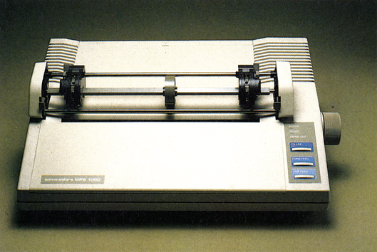
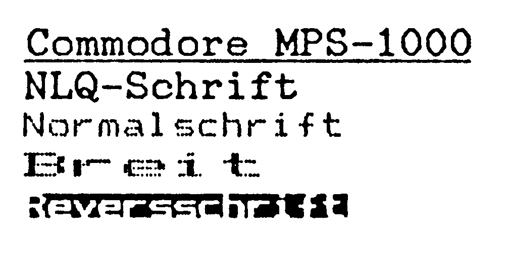
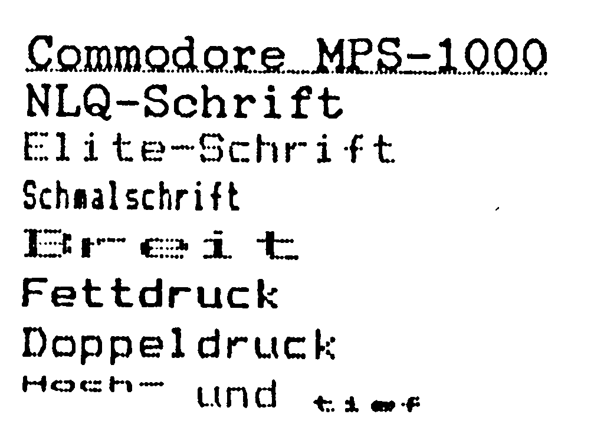

MPS 1000 — Neue Referenz
Jahrelang hat Commodore mit seiner MPS-Reihe Drucker angeboten, die zwar preiswert, aber leider auch wenig leistungsfähig waren. Das hat sich nun geändert!

Angefangen hat alles mit dem VC 1526, der eigentlich gar nicht schlecht war, sieht man von der fehlenden Grafik, der Inflation von Betriebssystemversionen und den nicht vorhandenen Umlauten einmal ab. Dafür gab es bereits, ebenso wie beim Nachfolgemodell MPS 802, umfangreiche Tabellier- und Formatsteuerungen. Seit damals erfreut sich auch der MPS 801 und kurz darauf auch der MPS 803 großer Verbreitung, obwohl Schriftbild und Druckleistung eher unbefriedigend sind. Insgesamt gab es aber für die Heimcomputer keinen Drucker von Commodore, der auch höheren Ansprüchen genügen konnte und so wurde es Zeit für eine neue Druckerpalette. Den Anfang macht nun der neue MPS 1000.
Wie schon seine Vorgängermodelle wird auch der MPS 1000 nicht von Commodore selbst gebaut, sondern von einem anderen Hersteller nach den Wünschen von Commodore gefertigt. Im Gehäuse des MPS 1000 schlägt deshalb auch kein Commodore- sondern ein Epson-Herz. Um die Artverwandtschaft zu erkennen, braucht man allerdings nicht so weit vorzudringen, denn bereits äußerlich sieht man, daß der MPS 1000 ein abgewandelter Epson LX-86 beziehungsweise LX-90 ist. Man hat sich bei Commodore jedoch nicht damit begnügt, den Drucker komplett bei Epson zu kaufen, sondern hat ihn mit einigen interessanten Besonderheiten ausgestattet, die ihn von den Epson-Ursprungsmodellen wesentlich unterscheiden. Wie schon bei vielen anderen Druckern wurde nun auch bei Commodore zusätzlich eine Centronics-Schnittstelle und ein weiterer Befehlsmodus eingebaut. Beide Schnittstellen befinden sich gut erreichbar auf der Gehäuserückseite. Direkt neben den Schnittstellen sind gut erreichbare DIL-Schalter für verschiedene Funktionen angebracht. Dazu gehört zum Beispiel die Umschaltung von Commodore- in den IBM-Modus, die Wahl der Schnittstelle (seriell oder parallel) und verschiedene Zeichensatzanpassungen. Wie schon beim LX-86 verfügt der MPS 1000 ebenfalls nur über einen aufgesetzten Zugtraktor, der zwar nicht optimal ist, aber seine Funktion zufriedenstellend erfüllt. Für Freunde von Bedienungstasten sind die drei Tasten für Online, Formfeed und Linefeed vorhanden.
Zwei Befehlssätze
Wie man schon aus den zwei Schnittstellen schließen kann, besitzt der MPS 1000 zwei Befehlssätze, nämlich einen Commodore- und einen IBM-Grafikdrucker-Befehlssatz. Besonders wichtig ist dabei, daß nun endlich eine gute Grafikfähigkeit vorhanden ist. So gibt es nicht nur die bekannte Grafik mit einer Auflösung von 480 Punkten pro Zeile, sondern auch eine Grafik mit doppelter Auflösung (960 Punkte pro Zeile). Alle Commodore-Zeichen stehen nun auch in NLQ-Schrift zur Verfügung. Trotzdem sind Reversdruck, Breitschrift und Normalschrift auch weiterhin über Steuerbefehle anwählbar (Bild 1). Sehr erfreulich ist auch, daß die umfangreichen Druckformatierungsbefehle, die vom MPS 802 bekannt sind, auch beim MPS 1000 funktionieren; sie werden wie gewohnt über Sekundäradressen eingestellt. Da die Zeichensätze auf den C 128 abgestimmt sind, kann man auch einen Zeichensatz mit deutschen Umlauten auswählen. Die Werte der Umlaute orientieren sich dabei am C 128, das heißt, sie sind mit einem Textprogramm wie Vizawrite 64 nicht zu erreichen.

Damit ist aber nur die eine Hälfte der Befehle des MPS 1000 beschrieben. In seinem zweiten Modus, dem IBM-Modus, emuliert der MPS 1000 einen IBM-Grafikdrucker. In diesen Modus gelangt man durch Umschalten eines DIP-Schalters, wobei es unwichtig ist, ob der Drucker seriell oder parallel angeschlossen ist. Das heißt, der IBM-Modus steht nicht nur den Besitzern eines PC 10/20 oder Amigas zur Verfügung, sondern funktioniert auch mit dem C 64 und C 128. Verwendet man den IBM-Modus zusammen mit dem C 64 oder C 128, stehen eine Reihe von leistungsfähigen Befehlen, wie man sie von Epson-Druckern her kennt, zur Verfügung. So ist es zum Beispiel möglich, NLQ-Schrift, fett, komprimiert, unterstrichen, doppelt, hoch- und tiefgestellt zu drucken (Bild 2). Außerdem stehen die Befehle ESC »K« bis ESC »Z« mit Grafikdichten von 480 bis 1920 Punkten pro Zeile zur Verfügung. Im IBM-Modus sind somit verschiedene Programme, die mit diesen Grafikbefehlen arbeiten, einsetzbar. Natürlich sind im IBM-Modus auch die beiden Zeichensätze eines IBM-Druckers vorhanden. Unglücklicherweise hält sich aber auch der IBM-Zeichensatz nicht an die ASCII-Norm, so daß es auch hiermit nicht möglich ist, die Umlaute mit Vizawrite 64 korrekt zu drucken. Wer allerdings bei seinem Textprogramm eine Anpassung der Zeichen vornehmen kann, hat hier keine Probleme.

| Name des Druckers: | Commodore MPS 1000 | Empfohlener Preis: | 798 Mark |
|---|---|---|---|
| Abmessungen (B x T x H): | 420 x 330 x 80 mm | Farbband-Preis: | S/W: 16 Mark |
| Druckkopf: | 9 Nadeln | Gewicht: | k. A. |
| Zeichenmatrix (H x B): | 9 x 8 | NLQ-Matrix: | 12 x 18 |
| Papierarten: | Einzel, Endlos | Zeichensätze: | IBM-ASCII + CBM |
| Papierformate: | Einzel, maximal 215 mm Endlos, maximal 254 mm |
Durchschläge: | bis zu 2 |
| Zeichen/Zeile: | bis zu 137 | Selbsttest: | Ja |
| Hexdump: | Ja | Halbautom. Einzelblatt: | nein |
| Pufferspeicher: | k. A. | Rückwärtstransp.: | Nein |
| Geschwindigkeit angegeben PICA Draft-Qualität: | 100 Zeichen/s | NLQ-Schrift: | 20 Zeichen/s |
| Geschwindigkeit Praxistest: | 80 Zeichen/s | NLQ-Schrift Praxistest: | 16 Zeichen/s |
| Ladbar. Zeichensatz: | Nein | Probetext: | 3:27 Minuten |
| Grafikmodi: | CBM: 480, 960, IBM 480-1920 Punkte/Zeile | ||
| Schriftarten: | Pica, Elite, Schmal, Breit, Doppel, Fett, Hoch, Tief, Unterstreichen, Proportional, Italic, NLQ-Schrift | ||
| Funktionstasten: | Online, Linefeed, Formfeed | ||
| Ausstattung: | deutsches Handbuch, Traktor | ||
| Besond. Funktionen: | zwei Schnittstellen (CBM + Centronics) | ||
| Sonderzubehör: | Automatischer Einzelblatteinzug | ||
Unseren Testdurchlauf hat der MPS 1000 mit preisbezogen guten Noten absolviert. Für den Probetext benötigte er 3:27 Minuten. Die Druckgeschwindigkeit beträgt 100 Zeichen pro Sekunde (gemessen 80 Zeichen pro Sekunde) in Normalschrift und 20 Zeichen pro Sekunde (gemessen 16 Zeichen pro Sekunde) in NLQ-Schrift. Das Schriftbild, besonders die NLQ-Schrift, ist für den Preis des Druckers von 798 Mark sehr gut (Bild 3). Auch die Möglichkeiten, die durch die zusätzliche Centronics-Schnittstelle offenstehen, sind sehr positiv zu bewerten. Hier wäre es allerdings wünschenswert, zusätzlich zum IBM-Modus noch einen ESC/P-Modus zu haben, denn erst dann ist sichergestellt, daß der MPS 1000 auch mit allen Programmen für Epson-Drucker zusammenarbeitet. Sieht man einmal vom ungünstigen Zugtraktor ab, so ist der MPS 1000 eigentlich der erste Drucker der MPS-Reihe, mit dem man sowohl Grafik als auch Text in guter Qualität ausdrucken kann. Er ist somit ein Allroundtalent für jedermann zum interessanten Preis und damit zu recht unsere neue Referenz in der Preisklasse unter 1000 Mark. Er löst damit den Citizen 120 D nach fast einjähriger Referenzzeit ab, der sich im direkten Vergleich nicht mit diesem Allroundtalent messen konnte.
(aw)Info: Commodore Deutschland, Lyoner Str. 38, 6000 Frankfurt/M